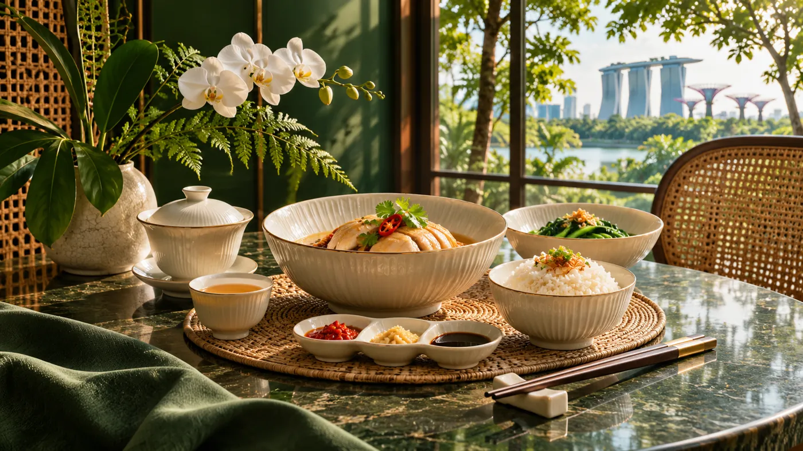
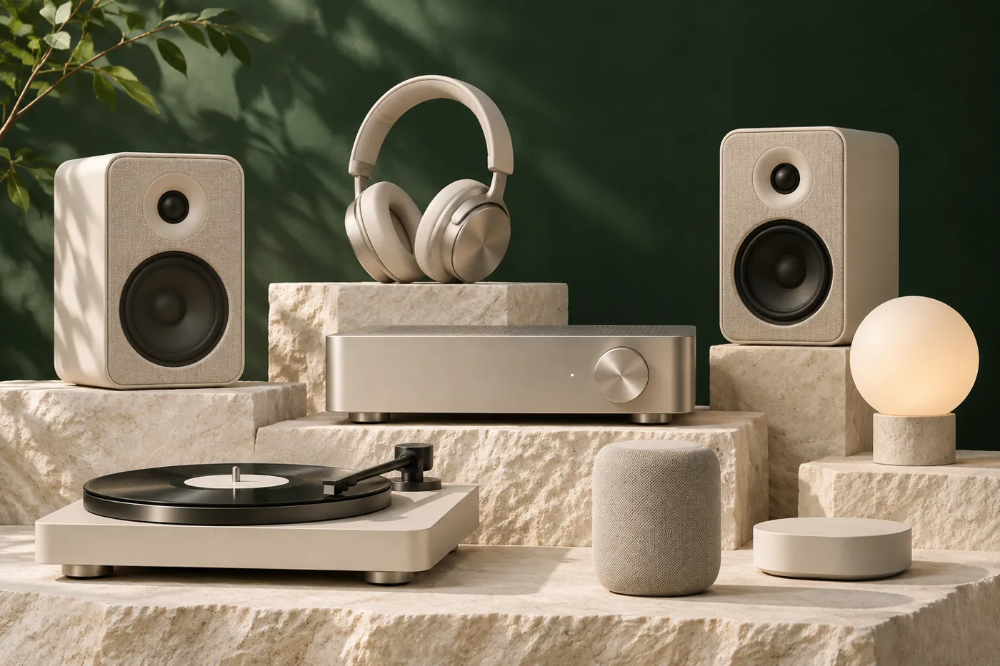
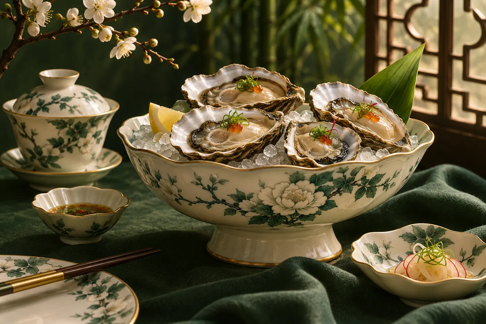
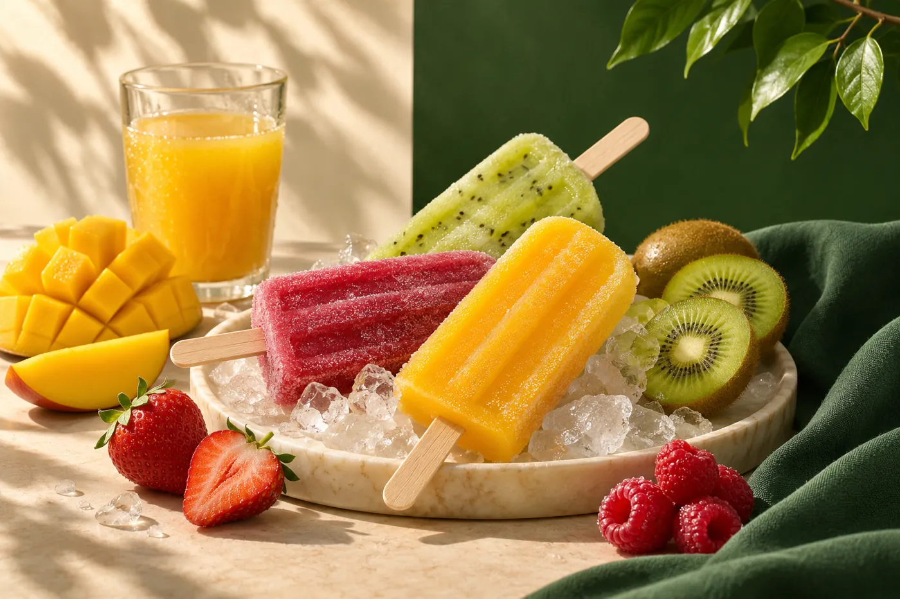

01 / FMCG
Food & essentials
Food and beverage brands for meals, gatherings and everyday moments.
Explore food brands ↗ROOTED IN SINGAPORE · CONNECTED TO THE REGION
From food essentials to lifestyle and wellness, Goh Joo Hin connects brands and people across the region.
A SINGAPORE STORY SINCE THE 1940s

ILLUSTRATIVE IMAGE · NOT AN OFFICIAL GJH PHOTOGRAPH01 / OUR BUSINESSES
GJH's portfolio spans three areas, connecting products and customers through its distribution network.
01 / FMCG
Food and beverage brands for meals, gatherings and everyday moments.
Explore food brands ↗
02 / ELECTRONICS
A portfolio of consumer electronics and products for everyday life.
Explore electronics ↗03 / HEALTH & NUTRITION
Health and wellness products, including the Borsch Med range.
Explore wellness ↗All photographs in this concept are AI-generated illustrations, not official products or premises.
02 / FEATURED BRANDS
A selection of product lines GJH describes as managed and distributed by the company.

Discover the brand

Discover the brand

Discover the brand
Names identify the brands discussed; imagery is illustrative and does not depict branded products.
03 / WORKING TOGETHER
Looking to explore a distribution partnership? Discover GJH's portfolio and regional reach, then contact the company directly to discuss your needs.
Contact GJH about partnership ↗Opens the official GJH contact page.
A diverse portfolio
Food, electronics and health products across different customer needs.
Regional connections
GJH describes an established network across Asia Pacific.
Distribution capabilities
GJH describes warehousing and distribution support for its customers.
04 / OUR HERITAGE
GJH's story began on Rochor Road in the 1940s. Its portfolio has grown across generations and categories.
A provision store supplying everyday food necessities.
The brand was established, with abalone as its first product.
GJH's history identifies MILI as its second house brand.
Borsch Med broadened the portfolio into health products.
05 / OUR REACH
GJH describes a distribution network across Asia Pacific, supported by warehousing and distribution capabilities.
Singapore · Malaysia · Indonesia · China · Hong Kong · Thailand · Vietnam · Philippines
Selected markets listed on GJH's website; product availability varies.
Learn about GJH's reach ↗LET'S CONNECT
For business and distribution enquiries, connect directly with Goh Joo Hin.
Visit official contact page ↗This link leaves the independent concept and opens the official GJH website.